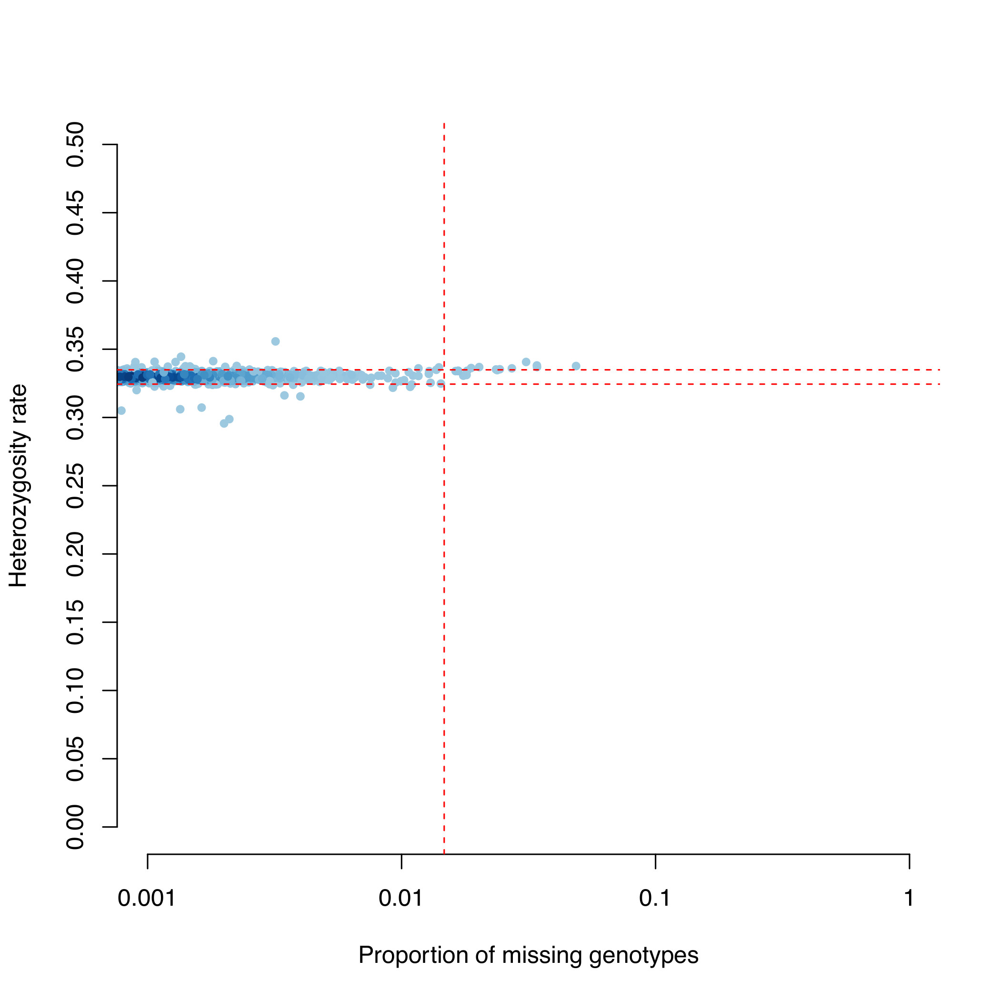
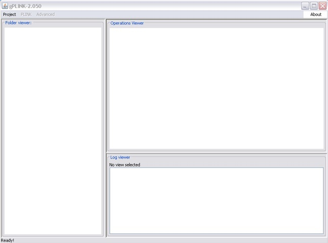
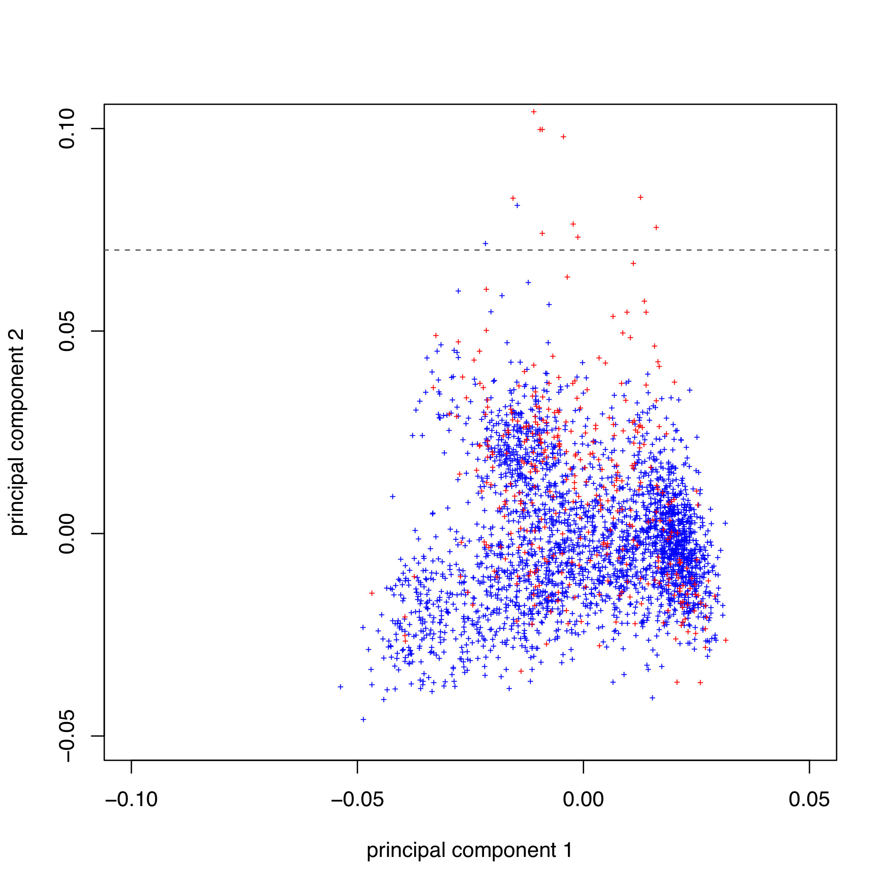
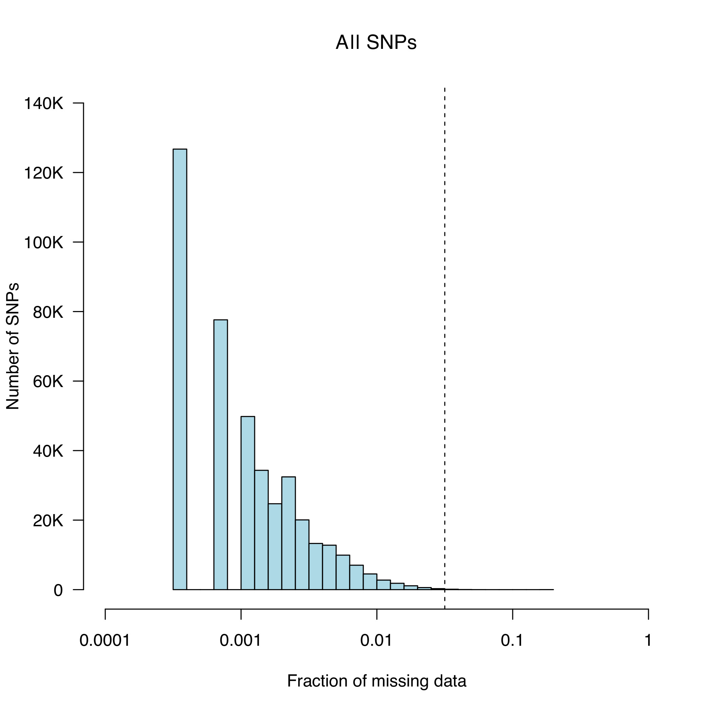
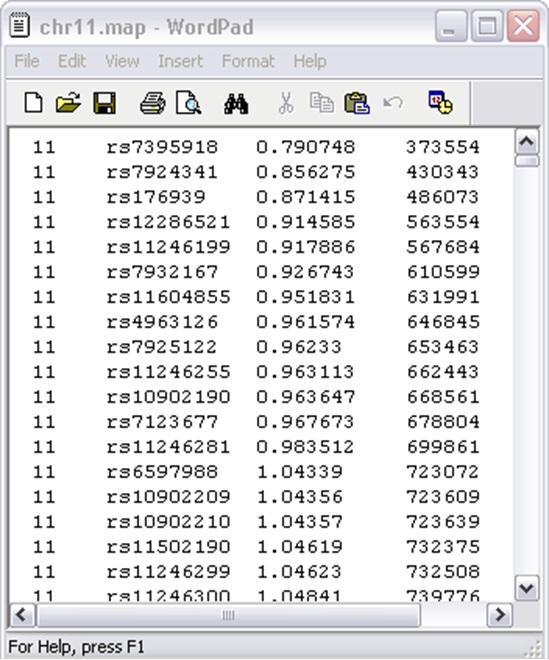

Genome Wide Association studies: from genomics to epidemiology
The objective of this tutorial is to get you familiar with the basic file format used for GWAS and common tools used for analysis and take you through data Quality control (Crucial in any study!).
Our dataset is based on a GWAS study for Meningococcal disease in a European population (https://www.nature.com/articles/ng.640).
Data:A. Create BED files for analysis:
1. Convert your plink genotype files to binary format - smaller file easier for manipulation of data
We have already provided you with plink formatted files we won't have to do this step.
Your data set:
Plink binary formatted dataset consisting of 3004 individuals, 409 cases, 2595 controls, 601089 variants
Double-check the basic stats of your dataset (number of variants, individuals, controls, cases) by examining MD.bim and MD.fam with bash utilities like awk or wc.
What other information is available?
B. Sample QC
1. Identification of Individuals with discordant sex information
Ideally, if X-chromosome data are available, we would calculate the mean homozygosity
rate across X chromosome markers for each individual in the study and identify discordance
with our reported Sex phenotype.
As our data only contains autosomes we will skip this step.
2. Identification of individuals with elevated missing data rates or outlying heterozygosity rate
2.1. At the shell prompt type:
plink --bfile MD --missing --out MDThis creates the files MD.imiss (sample-based missing report) and MD.lmiss (variant-based missing report). The fourth column in the imiss file (N_MISS) gives the number of missing SNPs and the sixth column (F_MISS) gives the proportion of missing SNPs per individual.
2.2. At the shell prompt type:
plink --bfile MD --het --out MDThis creates the file MD.het where the third column gives the observed number of homozygous genotypes [O(Hom)] and the fifth column gives the number of non-missing genotypes [N(NM)], per individual.
2.3. Calculate the observed heterozygosity rate per individual using the formula (N(NM) - O(Hom))/N(NM) and create a graph where the proportion of missing SNPs per individual is plotted on the x-axis and the observed heterozygosity rate per individual is plotted on the y-axis. Type:
R CMD BATCH imiss-vs-het.RscriptThis creates the graph MD.imiss-vs-het.pdf (see below).
2.4. Add the family ID and individual ID of all the failing this QC using:
R CMD BATCH imiss_het_fail.RscriptThis produces a file named fail_imisshet-qc.txt
3. Identification of duplicated or related individuals
3.1. To identify duplicate & related individuals, create an Identity-by-State (IBS) matrix – calculated for each pair of individuals based on the shared proportion of alleles.
3.1.1. To reduce the computational complexity, first prune the dataset so that no pair of SNPs (within a given window e.g 200kb) has linkage disequilibrium (r² > 0.2). Type
plink --bfile MD --indep-pairwise 200 5 0.5 --out MDThis creates files with the extension *.prune.in *.prune.out & *.log
3.1.2. Then, to extract pruned SNPs and generate pair-wise IBS, type:
nohup plink --bfile MD --extract MD.prune.in --genome --out MD &This might take a few minutes and creates files with the extension *.genome & *.log
3.1.3. To identify all pairs of individuals with an Idenity-by-descent (IBD) > 0.185. Type:
perl run-IBD-QC.pl MDTo visualise the IBD rates, type:
R CMD BATCH plot-IBD.Rscriptthis generates MD.IBD-hist.pdf
4. Identification of individuals of divergent ancestry
4.1. Principal components analysis (PCA) is performed with pruned bed file datasets generated from step 3.1.2 using the ./RUN_PCA.sh command. This generates the following output files: MD.pruned.pca.par, MD.pruned.pca.log, MD.pruned.pca.evec, MD.pruned.pca, MD.pruned.eval. The evec extension file is what you will need to view your PCs
4.2. Create a scatter diagram of the first two principal components, including all individuals in the file MD.pruned.pca.evec (the first and second PCs are columns 2 and 3 respectively). Type:
R CMD BATCH plot-pca-results.RscriptThis outputs pca_plot.pdf
For the next R script we need to install the reshape package. Fire up R by typing R and install the package via
options(download.file.method = "wget")install.packages("reshape")4.3. Remove all individuals failing QC
4.3.1. To concatenate all the files listing individuals failing the previous QC steps into single file, at the unix prompt type:
cat fail*txt | sort -k1 | uniq > fail_qc_inds.txtThe file fail_qc_inds.txt should now contain a list of unique individuals failing the previous QC steps.
4.3.2. To remove these from the dataset type:
plink --bfile MD --remove fail_qc_inds.txt --make-bed --out clean.MDHow many individuals in total will be excluded from further analysis?
How many individuals in total do you have for further analysis? HINT: check your log file
C. Marker QC
5. Identify all markers with an excessive missing data rate
5.1. To calculate the missing genotype rate for each marker type:
plink --bfile clean.MD --missing --out clean.MDThe results of this analysis can be found in clean.MD.lmiss.
5.2. Plot a histogram of the missing genotype rate to identify a threshold for extreme genotype failure rate. This can be done using the data in column five of the clean.MD.lmiss file. Type:
R CMD BATCH lmiss-hist.RscriptThis generates clean.MD.lmiss.pdf
We chose to a call-rate threshold of 5% (these SNPs will be removed later in the protocol).
6. Test markers for different genotype call rates between cases and contols
6.1. To test all markers for differences in call rate between cases and controls, at the Unix prompt type:
plink --bfile clean.MD --test-missing --allow-no-sex --out clean.MDThe output of this test can be found in clean.MD.missing.
To create a file called ‘fail-diffmiss-qc.txt’, which contains all SNPs with a significantly different (P<0.00001) missing rate between cases and controls, type
perl run-diffmiss-qc.pl clean.MD7. Remove all markers failing QC
7.1. To remove poor SNPs from further analysis and create a new clean (QC’D) MD data file, at the Unix prompt type:
plink --bfile clean.MD --exclude fail-diffmiss-qc.txt --maf 0.01 --geno 0.05 --hwe 0.00001 --make-bed --out clean.final.MDIn addition to markers failing previous QC steps, those with a MAF < 0.01, missing rate > 0.05 and a HWE P-value < 0.00001 (in controls) are also removed.
8. Perform a GWAS on your QC’d dataset
8.1. To run a basic case/control association test, at the unix prompt type:
plink --bfile clean.final.MD --assoc --ci 0.95 --adjust --allow-no-sex --out final.MD.assocYour association output file will contain 12 columns:
8.2. To visualise your data:
8.2.1. Generate a Quantile-Quantile (QQ) plot of your p-values to look at the distribution of P-values and assess whether genomic inflation is present (lambda>1) (this can also be found in your assoc. log file).
8.2.2. Generate a manhattan plot to visualise where your association signals lie across the chromosomes. Type:
R CMD BATCH GWAS_plots.RThis generates both plots: final.MD.assoc_qq.png and final.MD.assoc_mhplot.png
8.2.2.1. Let’s zoom into a region of interest: the tower of SNPs on CHR1 (coloured in yellow). This the Complement Factor H (CFH) region known to be associated with Meningococcal disease. The previous Rscript in 8.2.2 above also generated the chr1_CFH_region.txt file.